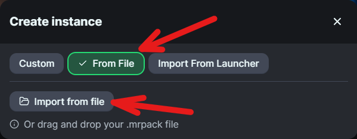

Installationsanleitung Create-SMP Modpack
Installation
- Modrinth App installieren und einrichten
- Modpack herunterladen
- in der Modrinth App unten links auf das grüne "+" klicken, um eine neue Instanz zu erstellen
- "From File" auswählen und dann die zuvor heruntergeladene .mrpack Datei auswählen 
- alle Mods und die richtige Minecraft- und Java-Version werden automatisch installiert
- (empfohlen) entweder in den globalen Einstellungen oder in denen der Instanz mehr RAM zuweisen (Hälfte des im System verfügbaren RAMs ist in der Regel optimal)
- Nach Installationsabschluss kann die Instanz über den grünen Pfeil, der beim hovern über die Instanz erscheint, oder durch Klicken des "Play" Buttons im Menü der Instanz gestartet werden.
Tips und Troubleshooting
- Sollte die Instanz mal crashen, ist das in der Regel nicht schlimm. Einfach nochmal starten, dann geht es in der Regel wieder...
-
Wenn die Instanz zu oft crashed, kann es passieren, dass die Einstellungen teilweise resetted werden. In diesem Fall:
- die Instanz stoppen
- über den Button neben dem "Play" Button im Menü der Instanz die Dateien öffnen
- eine Kopie der Datei
options.txt.bakmachen - die Datei
options.txtlöschen - die neu angelegte Kopie in
options.txtumbenennen - die Instanz wieder starten
jetzt sollten die Einstellungen wieder so sein, wie als das Modpack frisch installiert war - Wenn du etwas an den Einstellungen geändert hast, solltest du selbst ein Backup der
options.txtDatei machen, um dieses statt der originalenoptions.txt.bakzur Wiederherstellung zu verwenden - sollte die Instanz gar nicht mehr funktionieren o.ä., einfach das Modpack aus der Modpack-Datei neu installieren